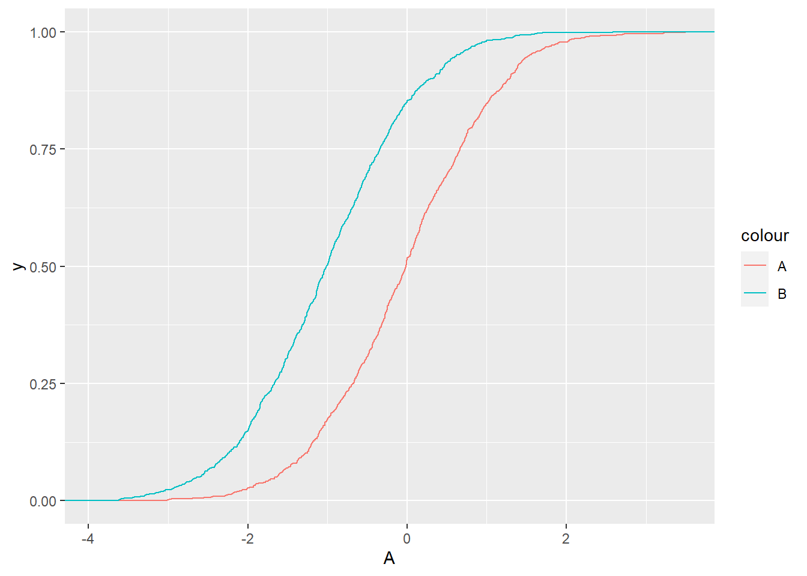
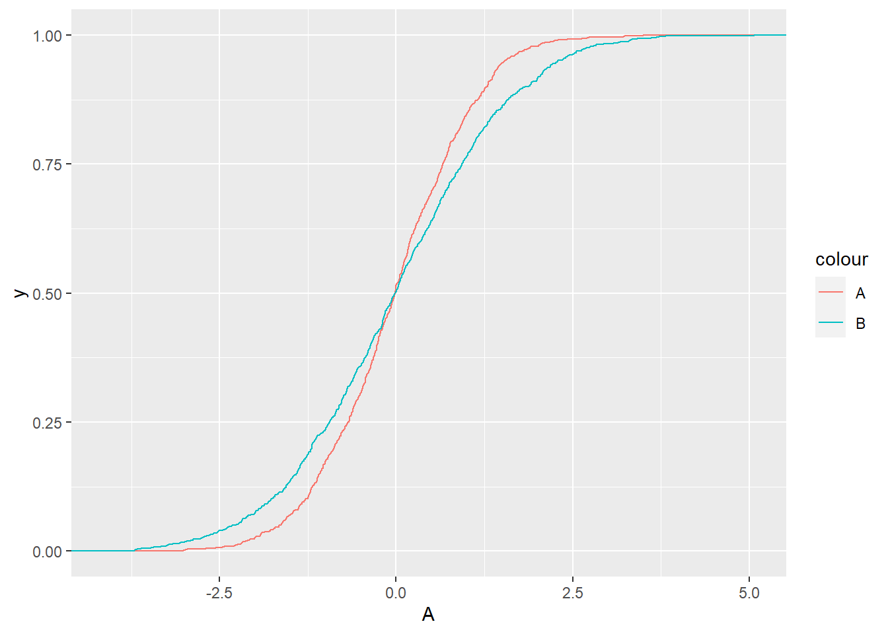
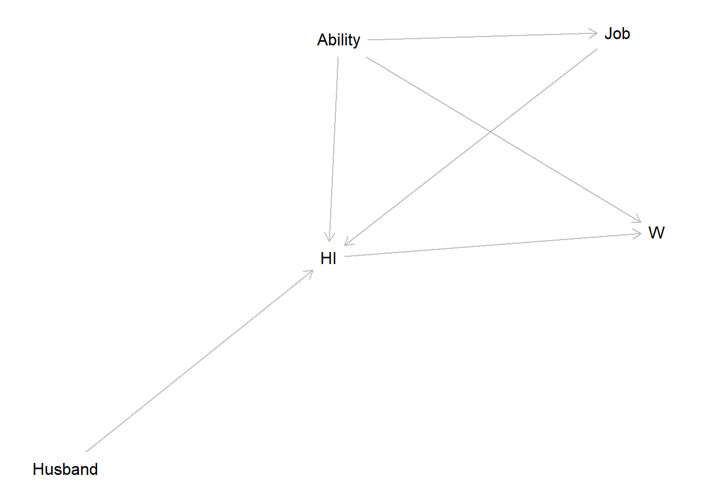

6 Stochastic dominance
6.1 First-order stochastic dominance
\[ A \ \mathrm{FSD}\ B \iff p(A\leq x)\leq p(B \leq x)\quad \forall x \] One way to think about this is that lottery \(A\) is lottery \(B\) plus a bit more.
\[ A \sim B + Y, \quad \text{where the support of } Y \text{ only includes nonnegative numbers} \]
Example: \[ A \sim N(0,1),\quad B\sim N(-1,1) \]
If we conclude that \(A\) FSD \(B\), then anyone who likes more money to less money would prefer lottery \(A\) to \(B\)
library(tidyverse)
set.seed(42)
A<-rnorm(1000)
B<-rnorm(1000)-1
d<-data.frame(A,B)
(
ggplot(data=d)
+stat_ecdf(aes(x=A,color="A"))
+stat_ecdf(aes(x=B,color="B"))
)
6.2 Second-order stochastic dominance
\[ A \ \mathrm{SSD}\ B \iff \int_{-\infty}^xp(B\leq \tilde x)- p(A \leq \tilde x)\mathrm d\tilde x\geq 0\quad \forall x \] A special case of this is if: \[ B = A + \epsilon-c,\quad E(\epsilon)=0,\quad p(\epsilon\mid A)=p(\epsilon), \quad c\geq 0 \]
Can think of the special case as a “mean preserving spread”, maybe minus a constant.
Example: \[ A \sim N(0,1),\quad B\sim N(0,2) \]
If we conclude that \(A\) FSD \(B\), then anyone who likes more money to less money would prefer lottery \(A\) to \(B\)
library(tidyverse)
set.seed(42)
A<-rnorm(1000)
B<-sqrt(2)*rnorm(1000)
d<-data.frame(A,B)
(
ggplot(data=d)
+stat_ecdf(aes(x=A,color="A"))
+stat_ecdf(aes(x=B,color="B"))
)
If we conclude that \(A\) SSD \(B\), then anyone who is a risk-averse expected utility-maximizer will prefer \(A\) to \(B\)
library(dagitty)
g<-dagitty("
dag {
HI-> W
Ability -> W
Ability -> Job
Ability->HI
Job -> HI
Husband->HI
}
"
)
plot(g)
print(paths(g,"HI","W"))## $paths
## [1] "HI -> W" "HI <- Ability -> W"
## [3] "HI <- Job <- Ability -> W"
##
## $open
## [1] TRUE TRUE TRUEGeneral conditions for an instrument to be valid:
- \(\mathrm{cov}(Z,\epsilon)=0\)
- \(\mathrm{cov}(Z,X)\neq 0\)